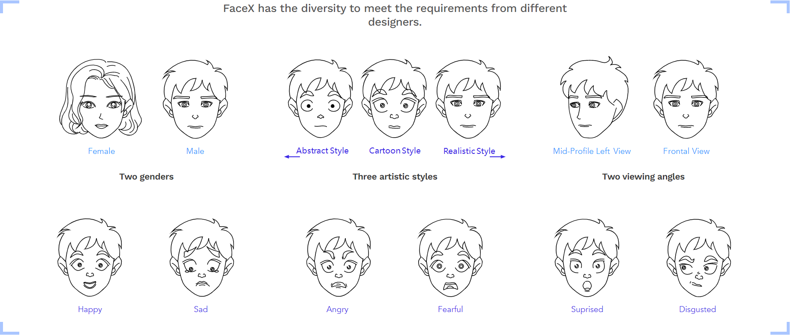
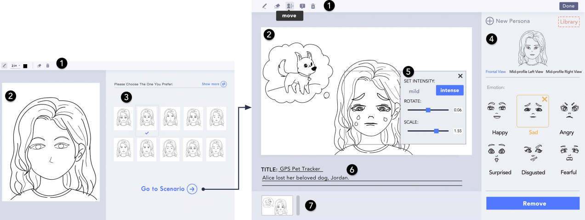

A Dataset Containing Hand-Drawing Sketches
iDVx Lab
Sketch drawings play an important role in assisting humans in communication and creative design since ancient period. This situation has motivated the development of artificial intelligence (AI) techniques for automatically generating sketches based on user input. Sketch-RNN was developed for this purpose and known as a state-of-the-art technique. However, it suffers from limitations, including the generation of lowquality results and its incapability to support multi-class generations. To address these issues, we constructed a stroke-based sketch dataset, FaceX. We introduced AI-Sketcher, a deep generative model for generating high-quality multiclass sketches. Meanwhile, we present EmoG, an interactive system that generates sketches of characters with emotional expressions based on input strokes from the user.
The dataset contains over 5 million labeled facial sketches categorized by genders (male, female), viewing angles (frontal, mid-profile left view), and emotions (neutral, happy, sad, angry, fearful, surprised, disgusted). In total, the designers drew 2,205 pairs of eyebrows, 2,016 pairs of eyes, 1,806 noses, and 2,058 mouths that satisfy aesthetic criteria. We combined these hand-drawn facial features into different faces and placed these facial features according to the divine proportion of the human head.
AI-Sketcher consists of three components: (1) A conditional vector is used to ensure a high quality generation of sketches from multiple categories. (2) A influence layer is introduced to estimate how the previous strokes will influence on the next stroke. (3) A CNN-based autoencoder is employed to capture the spatial information of a training set.
EmoG is a data-driven design support tool that facilitates sketch ing Emotional expressions for storyboarding using a deep learning-based expression Generation approach. As a user draws a neutral face of an intended character, EmoG can sug gest potential character designs based on input strokes from the user and generate new sketches of the character with six basic expressions. The system also allows the user to interac tively specify the type and intensity of expression, the gender of the character, and viewing angle.